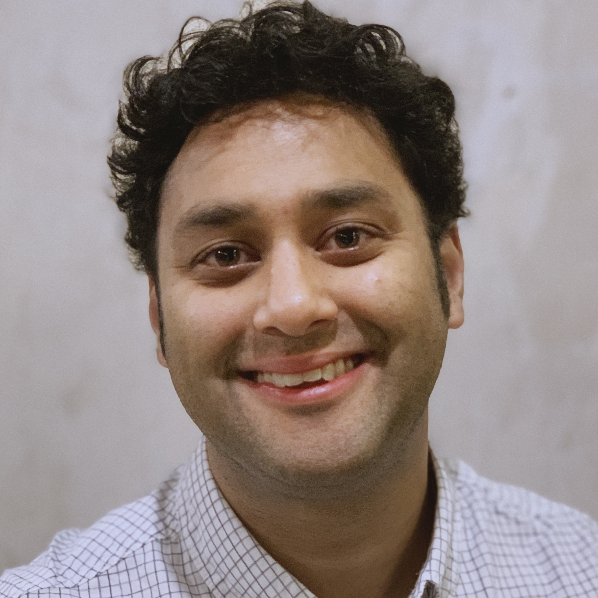
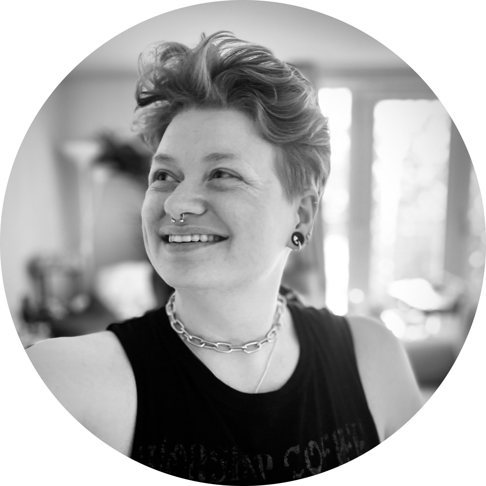
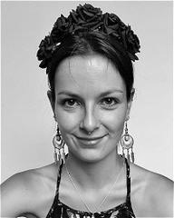
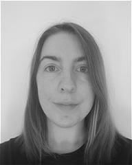
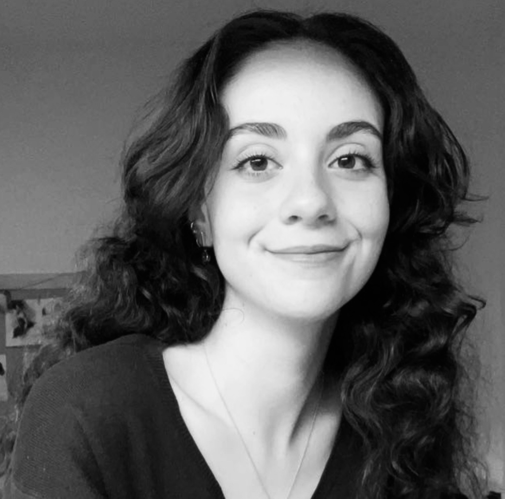

CPNS Lab
Computational Modelling & Mathematical Neuroscience — University of Exeter
Computational Modelling & Mathematical Neuroscience
Joint CPNS × Goodfellow Mathematics group for biophysical neural mass models, calibration & inference, sleep dynamics, and translational applications in psychiatry.
Methods: Multiobjective optimisation, Genetic Algorithms, Variational Laplace (thermodynamic), low-rank curvature, heteroscedastic noise, hybrid global-local optimisation, EEG.
Research Themes
Neural Mass Models
Thalamo-cortical conductance models (AMPA/NMDA/GABA-A/B, M, H), delays, stability, and transient dynamics.
Calibration & Inference
Hybrid global + local / Bayesian pipelines; identifiability; evidence via path-sampling.
Sleep & Rhythmicity
Spindles and slow oscillations; stage-wise modelling; neuromodulatory control.
Epilepsy & Seizure Dynamics
Neural mass/field modelling of ictogenesis and spread, with bifurcation-led analysis and EEG/iEEG calibration for presurgical mapping and virtual resection.
Psychiatry & Pharmacology
Parameter-to-phenotype mapping in CNVs and drug studies (GABAergic, NMDA, 5-HT2A).
People
Dr Alexander D. Shaw
Lead — CPNS Lab (Psychology)
Prof Marc Goodfellow
Lead — Goodfellow Group (Mathematics & LSI)

Dr Ravi Poorun
Lead — NIHR Clinical Lecturer in Paediatrics
Dominic Dunstan
Postdoc — NMM calibration methods; Epilepsy
Alessia Caccamo
PhD — NMM calibration & uncertainty

Lio Berndt
Research Associate — Modelling, M/EEG, Sleep & CNVs

Crow Diebel
PhD — DCM, Sleep & CNVs

Mason Taylor
PhD — Sleep EEG

Joy Krecke
PhD — Ketamine & μ-opioid modelling

Victoria Smart
PhD — Psychedelics & circuit models

Ewan Reeves
Natural Sciences Student

Imogen Cleary
Natural Sciences Student

Ella Jackson-Drexler
Psychology Student
Projects
Sleep Detectives EEG · CNVs
Mechanistic modelling of spindles and sleep stage dynamics; thalamo-cortical biomarkers.
Calibration Pipelines Global ↔ VL
Hybrid global + Thermo-VL optimisation, low-rank curvature, heteroscedastic noise, TI evidence.
Recent Outputs
- Dynamics-Informed Priors (DIP) for Neural Mass Modelling — bioRxiv, 2025.
- fitVariationalLaplaceThermo — Thermodynamic Variational Laplace (MATLAB).
- atcm.jl — Conductance-based thalamo-cortical modelling (Julia).
Collaborate or Join
We welcome collaborations and student projects at the interface of mathematics, neuroscience, and psychiatry.